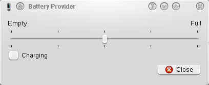
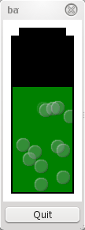

Files:
This examples shows how to access published context values from within QML. The example consists of two programs. The first, battery-publisher, is a standard Qt GUI application that is used to emulate a battery for the sole purpose of demonstrating the second program. It publishes the keys
/power/battery/charge /power/battery/charging
and provides controls for modifying their values.

The second program, battery-subscriber, is implemented in QML with some C++ code to display the QML and makes QValueSpaceSubscriber available from within QML.
The user interface of the battery subscriber program is described in QML. It has the following features: A rectangular area representing the percent charge of the battery. It indicates a low battery state by changing the color to red, it is green otherwise. An animation is shown to indicate that the battery is being recharged.

The QValueSpaceSubscriber class is available from within QML through the use of a plugin which is parsed by the QML engine. This means that simply using the QML element 'ValueSpaceSubscriber' allows access to the valuespace, which is demonstrated below.
Firstly, import the plugin library that provides the ValueSpaceSubscriber QML element.
import QtMobility.publishsubscribe 1.1
Two ValueSpaceSubscriber instances are created, one for each of the battery values. We give each object a unique id so that we can reference it from elsewhere in the QML. We set the path properties to the Value Space path of the keys. Finally we set the notify properties to true to enable the emission of change notification signals.
ValueSpaceSubscriber {
id: batteryCharge
path: "/power/battery/charge"
}
ValueSpaceSubscriber {
id: batteryCharging
path: "/power/battery/charging"
}
The default state of the rectangle used to visualize the battery charge uses the charge property of our BatteryCharge class in the expression for its height.
id: visualCharge
x: 12
y: 22 + 196 - height
width: 76
height: 196 * batteryCharge.value / 100
clip: true
color: "green"
When the battery charge changes the height of the rectangle will automatically change.
Next we define two additional states. The low state is entered when the battery charge drops below 25% and the battery is not being recharged. When in this state the color is set to red.
State {
name: "low"
when: batteryCharge.value < 25 && !batteryCharging.value
PropertyChanges {
target: visualCharge
color: "red"
}
}
The charging state is entered when the battery is being recharged. When in this state a particle effect animation is enabled.
State {
name: "charging"
when: batteryCharging.value
PropertyChanges {
target: bubbles
count: batteryCharge.value / 5
emissionRate: 5
}
},